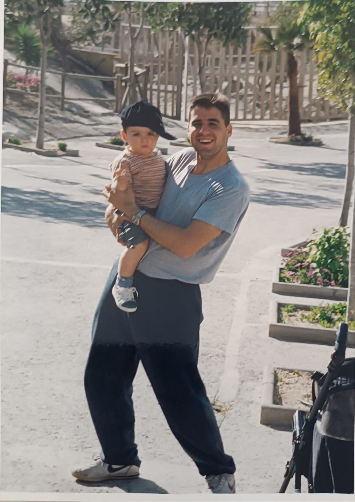
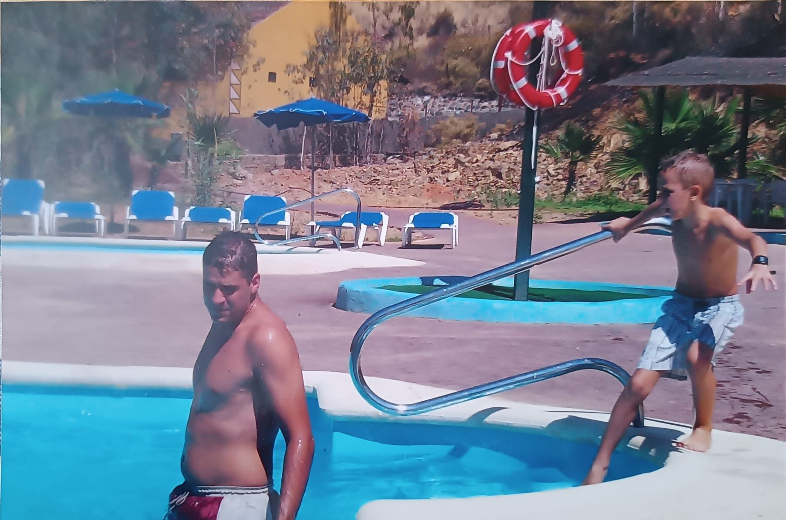
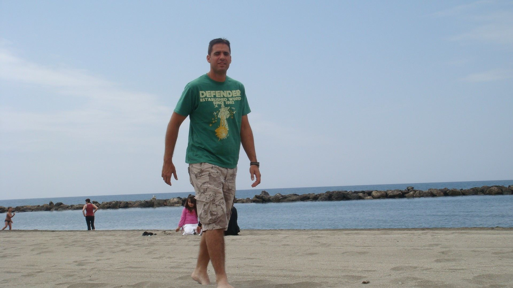

Mi historia
Soy Xavier. Yo también me abandoné y pensé: «cuando tenga tiempo, empiezo».
"Engordé, estaba siempre cansado, con dolor de espalda, y perdí la confianza."
Tenía trabajo, familia y mil responsabilidades, como tú. No volví a entrenar como a los 20: cambié la forma de entrenar, de comer y de descansar, sin quitarle tiempo a mi familia ni a mi trabajo.

A mis 20 Fuerte sin pensarloDeporte, energía y ninguna preocupación por el cuerpo.

A mis 25 Llega la barrigaTrabajo, hijos y casa. Entreno cuando puedo, que es casi nunca.
A mis 30
No me reconozco
Cansado, blando y siempre con prisa. Lo mío, para el lunes.

A mis 35 Mejor con camisetaEn la playa, la camiseta no se la quita nadie. Ni yo.
 Hoy · 48 años
Mejor que a los 30
Hoy · 48 años
Mejor que a los 30
Sin dietas raras ni horas de gimnasio. Ahora ayudo a otros padres a hacer lo mismo.
Desliza para ver los años → · — Xavier García, JAVIFITTRAINER